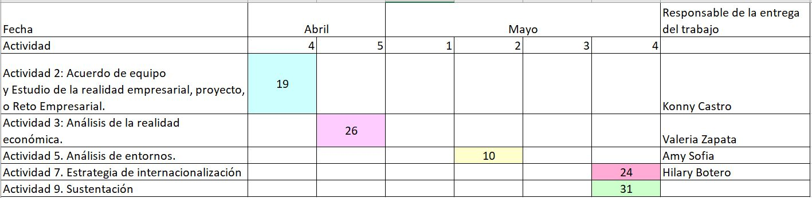
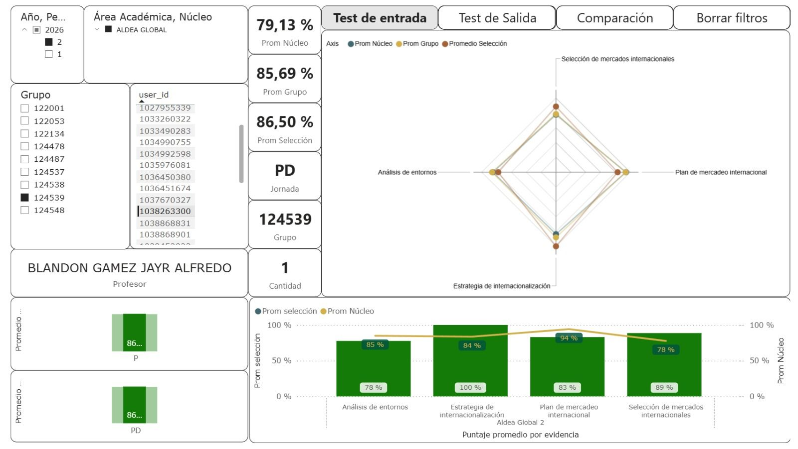
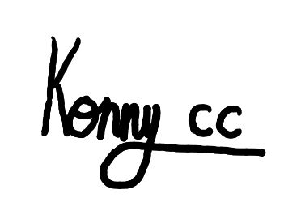
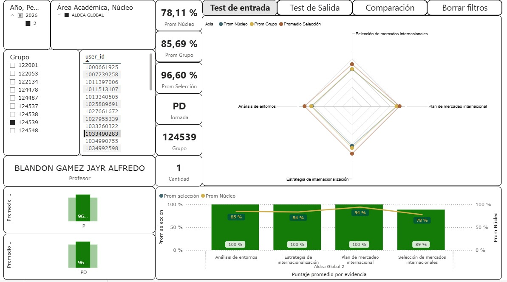
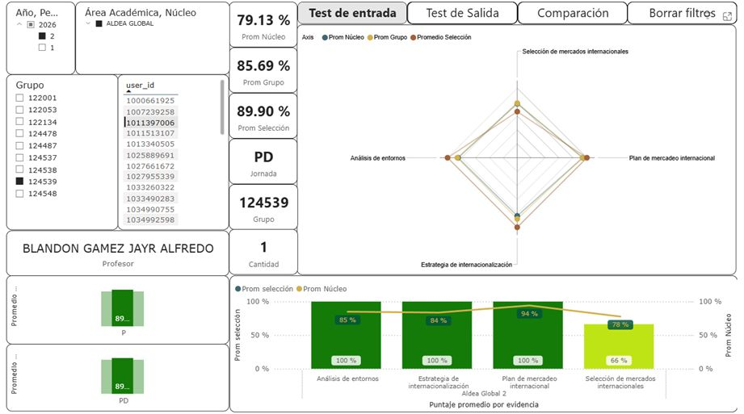
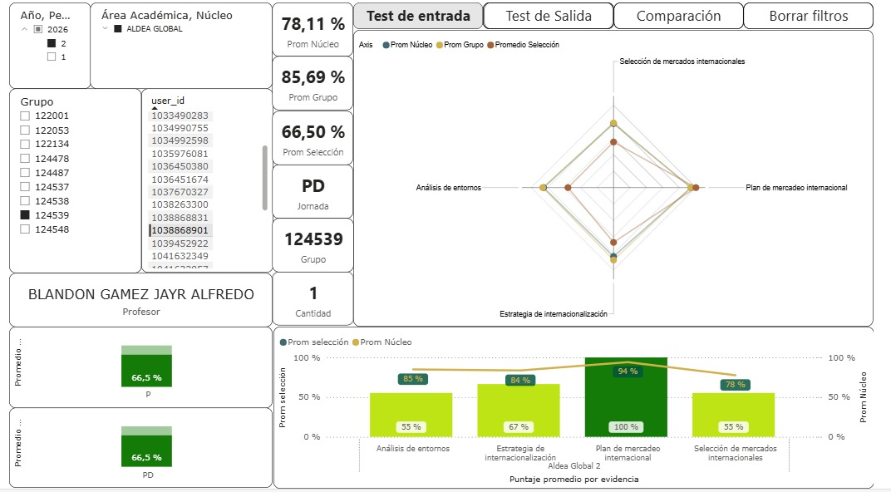

- Comunicación clara, amable y empática.
- Cumplir con los trabajos a tiempo y responsabilidades asignadas.
- Escuchar activamente y promover la confianza.
- Resolver desacuerdos de manera adecuada.
- Ambiente basado en la colaboración y comprensión.
- Respetar las opiniones y aportes.
Acuerdo de Equipo
Gestión y compromisos del grupo de trabajo
Compromisos para la convivencia
Consecuencias en caso de incumplimiento
Llamado de atención: Se realizará un llamado de atención por parte del equipo para señalar la falta y promover la reflexión.
Informe al docente: Tras tres llamados de atención, se informará al profesor para su seguimiento.
Expulsión del equipo: Como medida extrema, y ante la reiteración del incumplimiento, la falta de respeto, responsabilidad o diálogo, el integrante podrá ser expulsado del equipo.
Canales de comunicación
Canales establecidos para la coordinación del proyecto:
Conducta Regular
El equipo actuará con respeto, responsabilidad y compromiso, participando activamente y cumpliendo con las tareas a tiempo. Se fomentará una comunicación asertiva, donde todas expresen sus ideas con claridad y escuchen con respeto. Se trabajará en un ambiente de confianza y apoyo, priorizando el diálogo y la búsqueda de soluciones constructivas ante cualquier desacuerdo.
Cronograma

Análisis del test de entrada
Análisis Konny Castro Cano

Puedo analizar un desempeño general alto (86,50) que es superior al promedio del grupo (85,89) y al del núcleo (79,13) lo que evidencia un rendimiento competitivo. Se destacan fortalezas claras en la estrategia de internacionalización (100%) y en la selección de mercados internacionales (89%), demostrando dominio en la planeación global. El análisis de entornos (85%) y el plan de mercadeo (85%) también reflejan una base sólida. El área de gestión de operaciones (74%) es el punto con mayor oportunidad de mejora, lo que sugiere un enfoque necesario en la logística y ejecución técnica para equilibrar su perfil estratégico.

Firma de IntegranteAnálisis Valeria Zapata Zapata

En el test de entrada saqué un 96,60%, lo que para mí demuestra que tengo una buena base en los temas evaluados. Al ver mis resultados por competencias, en análisis de entornos obtuve 85%, lo que muestra que entiendo bien los factores del mercado. En estrategia de internacionalización y selección de mercados internacionales saqué 100%, lo que me da confianza en mi capacidad para planear la expansión de una empresa. En gestión de operaciones internacionales tuve un 92%, y en plan de mercadeo internacional un 100%, lo que refuerza mi visión comercial. Estos resultados me motivan a seguir aplicando estos conocimientos en el desarrollo del proyecto.
Firma de Integrante
Análisis Hilary Valentina Botero Ramos

La nota que obtuve en el test de entrada fue de 89.90% donde pude identificar mis fortalezas, obtuve buenos resultados en análisis de entornos, estrategia de internacionalización y plan de mercadeo internacional. Por otro lado, identifiqué que debo de fortalecer mis conocimientos en gestión de operaciones internacionales y selección de mercados internacionales. Esta evaluación me permitió tener una visión más clara de mis capacidades y de las áreas en las que debo enfocar mi aprendizaje para mejorar mi desempeño profesional.
Firma de Integrante
Análisis Amy Sofia Santamaria Parra

Tras evaluar los resultados de mi test de entrada en el que obtuve un desempeño del 89.9% me confirma que tengo una base muy sólida para entender cómo funcionan los negocios a nivel global. Mis puntos más fuertes fueron en análisis de entornos y estrategia de internacionalización con un puntaje de 100% lo que me permite identificar oportunidades en diferentes mercados. Sin embargo, en gestión de operaciones internacionales obtuve un 74% lo que me indica que debo profundizar más en la parte logística y de procesos. Este resultado es una excelente guía para enfocar mi aprendizaje y fortalecer esas áreas técnicas durante el desarrollo del núcleo.
Firma de Integrante